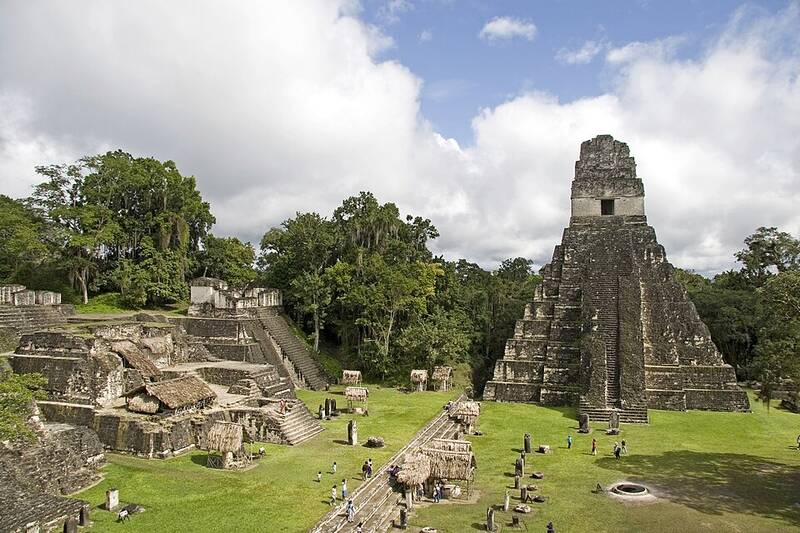

Tikal
Petén, Guatemala, about AD 200 to 900

One of the largest Maya cities, with temple pyramids rising above the rainforest canopy. 1
Open in the interactive Watcher
Sources
- Tikal Wikipedia
Petén, Guatemala, about AD 200 to 900

One of the largest Maya cities, with temple pyramids rising above the rainforest canopy. 1
Open in the interactive Watcher